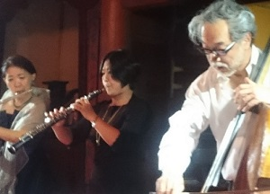

谷口 京（たにぐち みやこ）
高松高校平成4年卒
プロフィール

東慶寺コンサートにて16歳よりオーボエを始める。
高松高校卒業後、大阪教育大学教育学部教養学科芸術専攻音楽コースを卒業。
桐朋学園大学附属桐朋オーケストラアカデミーを修了したのち、桐朋学園大学音楽学部研究科を修了。
オーボエを、橋本徹雄、似鳥健彦、大嶋弥、蠣崎耕三の各氏に師事。
室内楽を、中川良平、二宮和子、四戸世紀の各氏に師事。
現在、海上自衛隊横須賀音楽隊オーボエ奏者として、全国各地で演奏活動を行っている。
ちなみに、音楽隊の主な任務は「士気高揚のための音楽演奏」「儀式における音楽演奏」「広報のための音楽演奏」であり、自衛隊と国民の懸け橋となり、「スマートで爽やかな音楽隊」をモットーに、演奏活動を行っている。